在 Real-Time Rendering Third Edition 的 Image-Based Effects 章節中提到了影像處理技術
而在其中的 Image Processing Kernel 段落中提到了高斯模糊及邊緣檢測
這兩種影像處理技術都有著相似的取樣原理
透過 Convolution Kernel 或 Convolution Matrix 來取樣貼圖的數據
而達到不同的效果
這次收集了許多不同種類的 Kernel
透過 Unity 進行簡單的驗證
將這些 Kernel 的取樣結果記錄下來
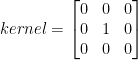
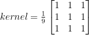
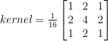
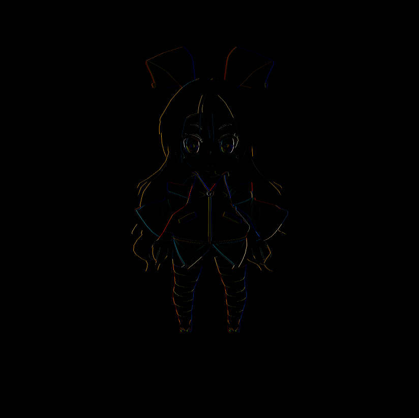
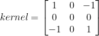
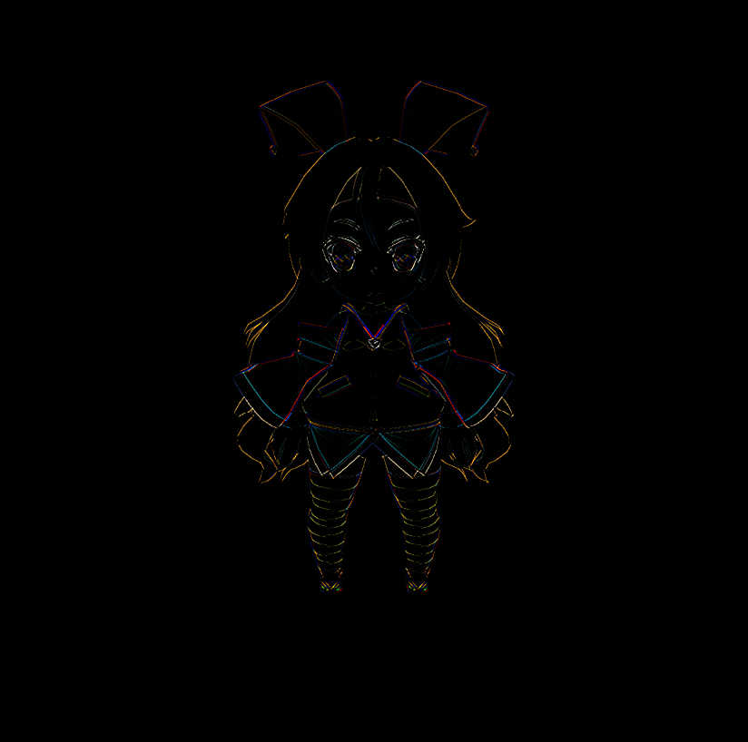
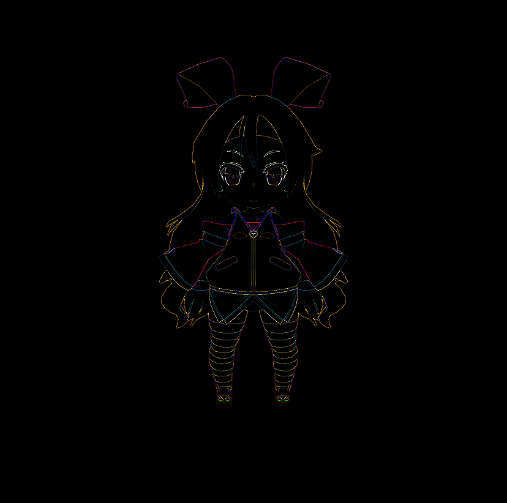
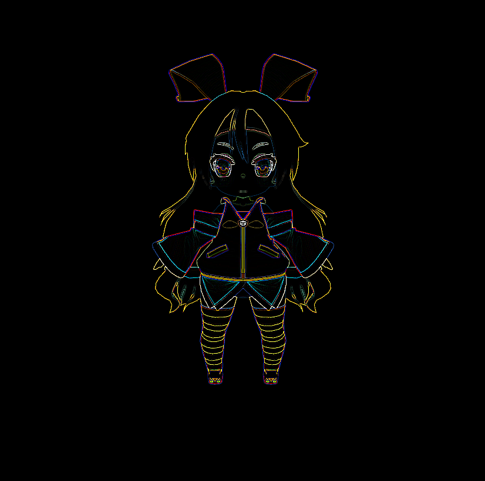
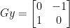


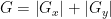
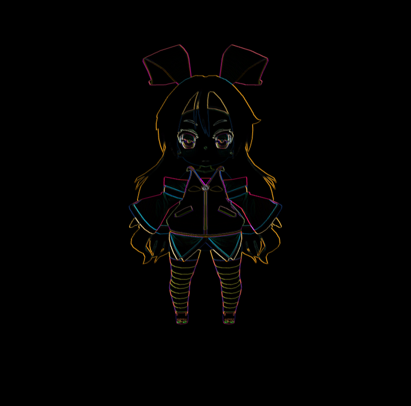
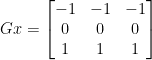

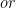
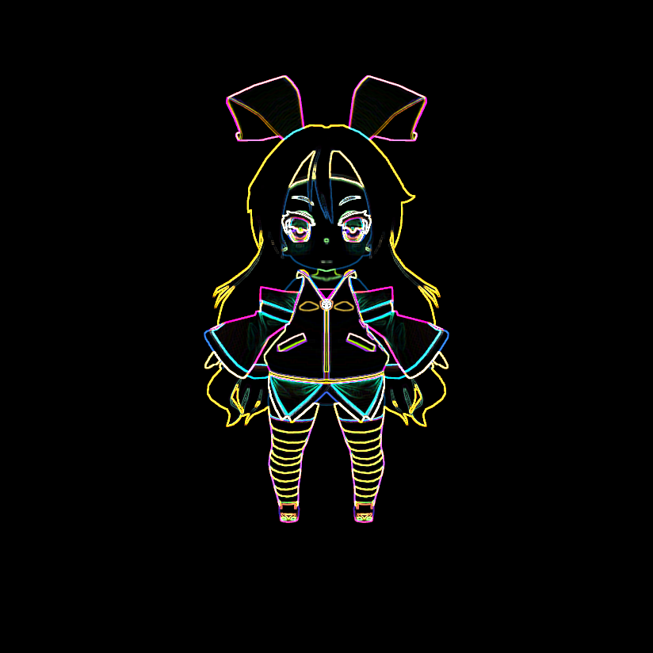
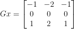
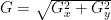
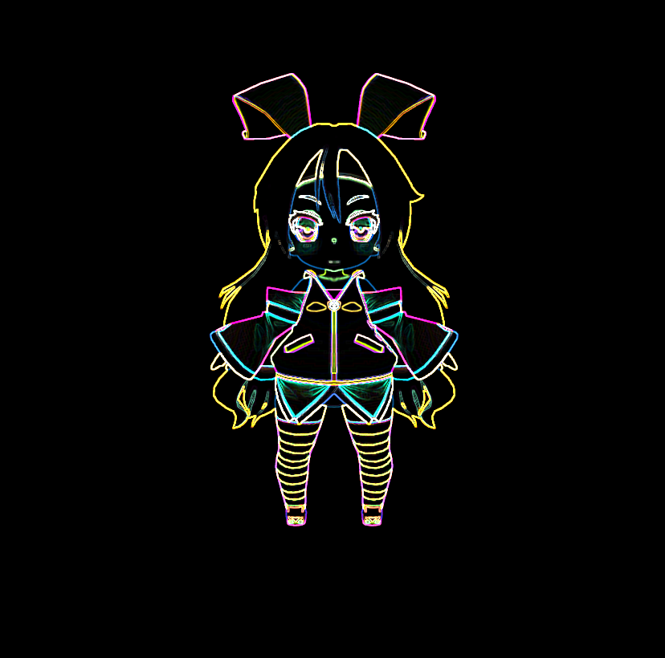
ted10401/ImageProcessingKernel
Kernel(image processing)
3×3 convolution kernels
8.2. Convolution Matrix
Unity Shader 入門精要, 第12章 螢幕後處理效果, 12.3 邊緣檢測